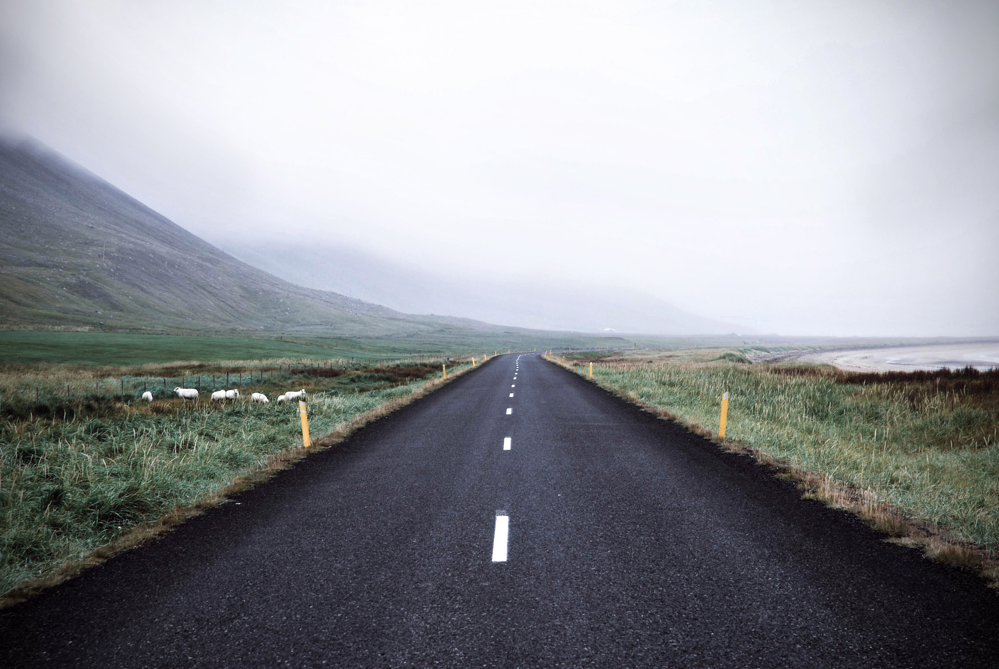
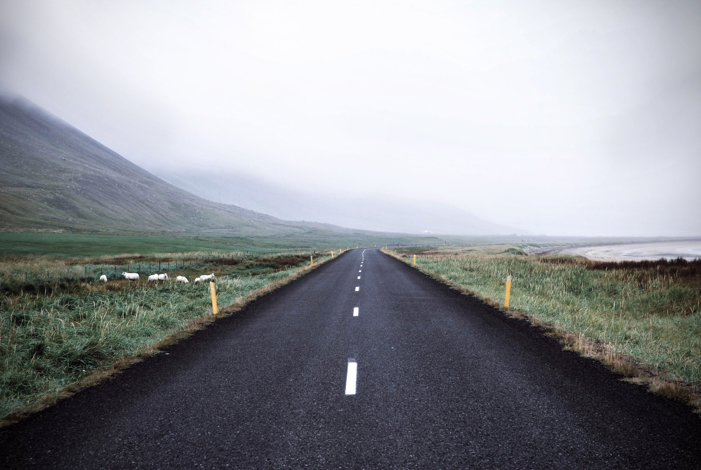
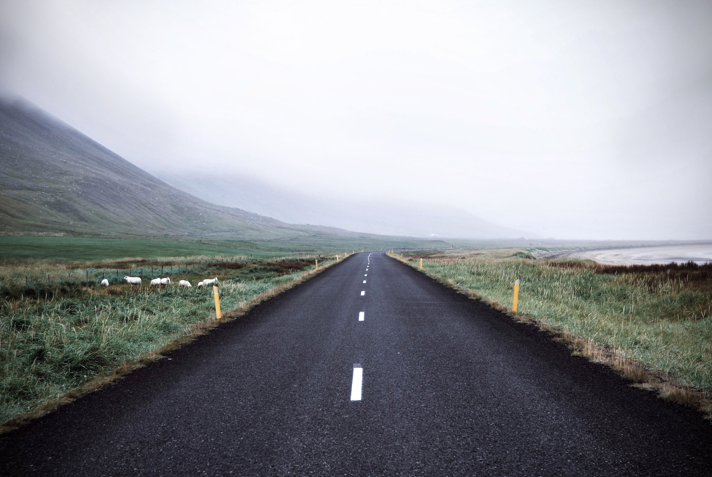

My name is Gabriel S. Cantiga. I'm mostly referred to as Gab.
I was born in the Kingdom of Saudi Arabia and mostly grew
up in the United Arab Emirates. Coincidentally, I was born
a day ahead of the UAE's national day. In which case, I
could celebrate my birthday during the holidays.
Although I was born and grew up in the Middle East,
my nationality is purely Filipino. I can speak up to
two languages (english and tagalog) and still getting
to know more. I sometimes visit my country on vacations
from courseworks. But overall, I have mostly seen and
understand the cultures and societies in the Middle East.
My Hobbies

I actually don't do hobbies as often as usual. I
mostly commit myself to important courseworks first
then I do anything I like to do.
My favorite hobby is playing basketball outdoors.
I used to play with a ball as a child and loved it.
Basketball was a fun physical activity especially since
I could throw the ball into a goal (which felt satisfying).
Nowadays, I just do rounds of dribbling moves to improve my
basketball skills.
Mobile gaming is another thing I love doing.
Though it may be less fun than playing it at the PC,
I find mobile games very comfortable to play as it is
portable. Furthermore, I grew up having a small and compact
gaming devices such as the old Gameboy and PSP.
Going on trips with my family happens sometimes but those
experiences tend to come at its best. For example, Jebel Jais is
on of UAE's highest mountain peaks. My photo above shows the view from
the mountains
PS: If you click on some of the images, they take you to my favorite content's official webpage!

 
